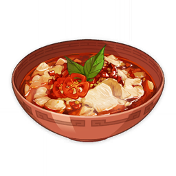

Black-Back Perch Stew

Description
A poached fish dish. The fish fillets are so tender and juicy that they almost seem to come alive in your mouth. The sense of loss was so unbearable when you swallowed a piece down that you just had to treat yourself to another piece.
Ingredients
- 3 Fish
- 1 Jueyun Chili
- 1 Salt
- 1 Violetgrass
Steps
- Head to the nearest stove or campfire.
- Cook the dish!
- Consume during battle to restore 30% of Max HP to the selected character and regenerate 790 HP every 5s for 30s.